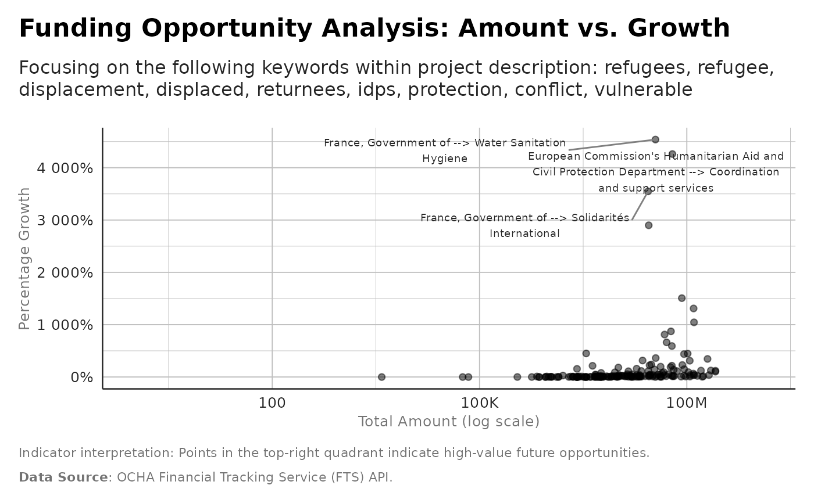

Prepare Funding Opportunity Dataset
Source:R/analysis_prepare_opportunity_dataset.R
analysis_prepare_opportunity_dataset.RdAggregates flows into donor-recipient-year observations and prepares features for an opportunity prediction model. Features include:
donor funding cycle timing (mean decision month)
historical funding patterns (growth in recent years)
simple NLP signals from description/keywords (presence of crisis keywords)
sector funding trends (share to global clusters)
Usage
analysis_prepare_opportunity_dataset(
flows,
lookback_years = 3,
crisis_keywords = c("refugees", "refugee", "displacement", "displaced", "returnees",
"idps", "protection", "conflict", "vulnerable")
)Examples
crisis_keywords = c("refugees", "refugee","displacement", "displaced",
"returnees","idps",
"protection", "conflict", "vulnerable")
features <- analysis_prepare_opportunity_dataset( flows,
lookback_years = 3,
crisis_keywords = crisis_keywords)
#> Warning: There was 1 warning in `dplyr::summarise()`.
#> ℹ In argument: `max_cluster_share = max(cluster_share, na.rm = TRUE)`.
#> ℹ In group 347: `donor = "European Commission's Humanitarian Aid and Civil
#> Protection Department"`, `recipient = "Emergency Shelter and NFI"`, `year =
#> 2021`.
#> Caused by warning in `max()`:
#> ! no non-missing arguments to max; returning -Inf
# Filter for non-NA growth, arrange by descending growth, and take the top 5.
label_data_top <- features |>
dplyr::filter(!is.na(pct_growth)) |>
dplyr::arrange(dplyr::desc(pct_growth)) |>
dplyr::slice_head(n = 3) |>
dplyr::mutate(donor_wrapped = stringr::str_wrap(paste0(donor, " --> ",
recipient),
width = 45))
ggplot2::ggplot(features, ggplot2::aes(x = total_amount, y = pct_growth/100)) +
ggplot2::geom_point(alpha = 0.5) +
ggrepel::geom_text_repel( data = label_data_top,
ggplot2::aes(label = donor_wrapped),
size = 2.5, segment.color = 'grey50',
min.segment.length = 0, box.padding = 0.5 ) +
ggplot2::scale_x_log10(
labels = scales::label_number(scale_cut = scales::cut_short_scale())) +
ggplot2::scale_y_continuous(labels = scales::label_percent() ) +
ggplot2::labs(
title = "Funding Opportunity Analysis: Amount vs. Growth",
subtitle = paste0(
"Focusing on the following keywords within project description: ",
paste(crisis_keywords, collapse = ", ")
),
x = "Total Amount (log scale)",
y = "Percentage Growth",
caption= paste0(
"Indicator interpretation: Points in the top-right quadrant indicate
high-value future opportunities.", "\n\n",
"**Data Source**: OCHA Financial Tracking Service (FTS) API.")) +
unhcrthemes::theme_unhcr(grid = TRUE, axis = TRUE,
axis_title = TRUE, legend = TRUE)
#> Warning: log-10 transformation introduced infinite values.
#> Warning: Removed 6559 rows containing missing values or values outside the scale range
#> (`geom_point()`).
